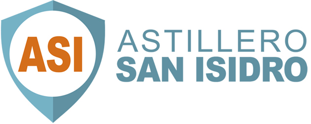
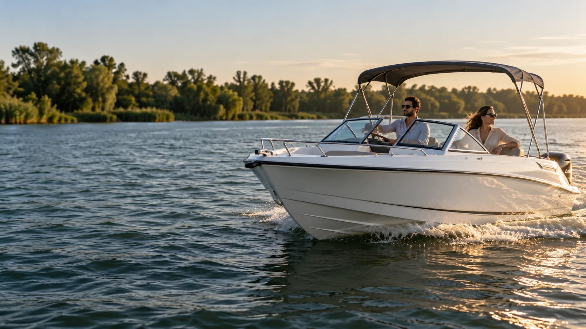
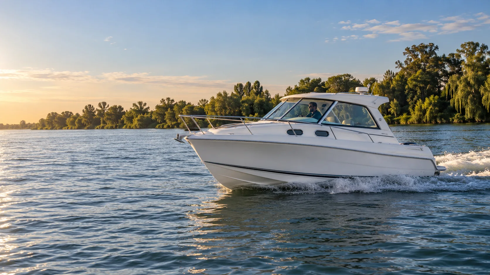
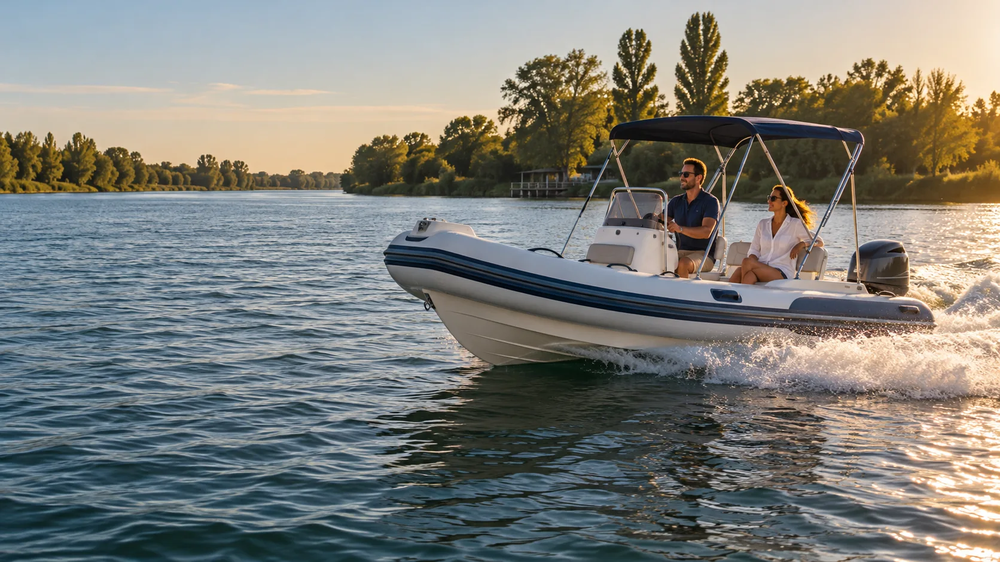

Lanchas
Para compartir el día, descubrir nuevos rincones y volver con ganas de más.

Hablemos
Astillero San Isidro · Beccar
Salí de la rutina. Encontrá tu manera de disfrutar el agua.
Explorá embarcaciones
Más tiempo en el agua
Para navegar con calma, hacer una pausa y seguir descubriendo.
Explorá embarcaciones
Espíritu de aventura
Libertad de movimiento para cada encuentro con el río.
Explorá embarcacionesLa vida en el agua
Una salida espontánea, un día con amigos o una escapada que se transforma en recuerdo. Navegar es abrir espacio para lo que importa.
En Astillero San Isidro, el universo de las embarcaciones se encuentra con ese deseo simple de estar más cerca del agua.
Encontrá tu próximo planExplorá posibilidades
De una tarde de paseo a un fin de semana en el río: descubrí qué tipo de embarcación va con vos.
Para compartir el día, descubrir nuevos rincones y volver con ganas de más.
Más espacio para descansar, seguir viaje y dejar que el tiempo vaya más lento.
Versatilidad y movimiento para quienes quieren estar siempre listos para salir.
Las imágenes son ilustrativas y no representan modelos específicos del astillero.
Nuestra mirada
El agua cambia la perspectiva. Nos invita a ir más lento, mirar alrededor y disfrutar el camino tanto como la llegada.
ConversemosTu próximo capítulo
¿Tenés una idea en mente? Acercate o llamanos y empecemos la conversación.
Teléfono +54 11 4897-3085 Visitanos España 1174, Beccar